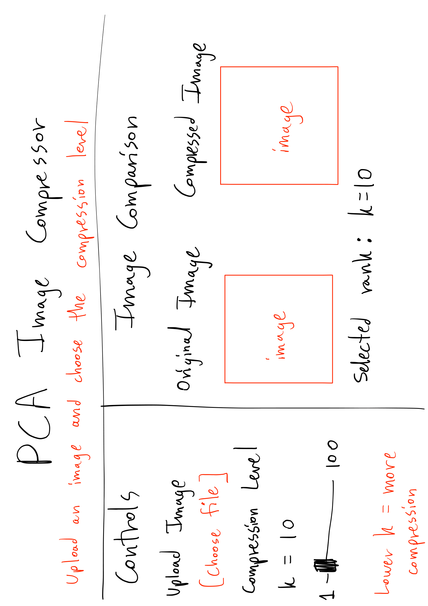

This app would allow a user to upload an image, choose a PCA compression level using the rank k, and compare the compressed image with the original.

The controls are placed in a sidebar on the left so that they are easy to find without taking space away from the image comparison. The user first uploads an image and then selects the compression level using a slider for k.
The original image and compressed image are displayed side by side so that the user can immediately compare the effect of compression. A smaller value of k gives more compression but loses more image detail, while a larger value of k preserves more of the original image.